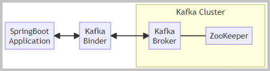
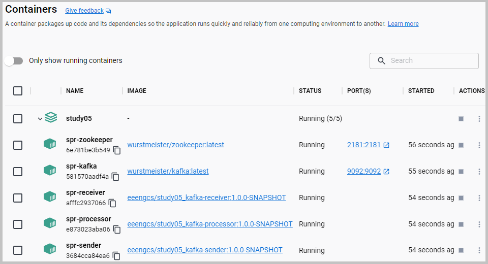
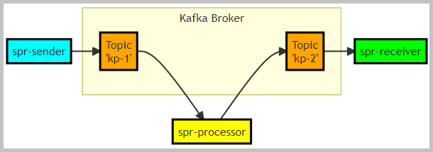
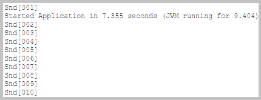
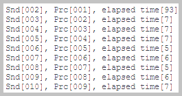
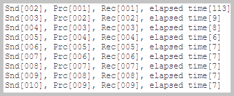
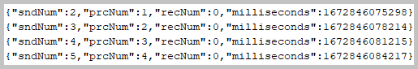

 In the Docker container 'spr-kafka', Kafka Server runs with a single Kafka Broker.
In the Docker container 'spr-kafka', Kafka Server runs with a single Kafka Broker.
This is the Spring Cloud Stream application with the Apache Kafka Binder.
The Apache Kafka Binder implementation maps each destination to an Apache Kafka topic.
The sections of this project:
Java source code packages in modules 'kafka-sender', 'kafka-processor', and 'kafka-receiver':
 module 'kafka-sender' application sources :
kp
module 'kafka-sender' application sources :
kp
module 'kafka-sender' test sources :
kp.sender
module 'kafka-processor' application sources :
kp
module 'kafka-processor' test sources :
kp.processor
module 'kafka-receiver' application sources :
kp
module 'kafka-receiver' test sources :
kp.receiver

 Java API Documentation ●
Java Test API Documentation
Java API Documentation ●
Java Test API Documentation
Action:

 1. With the batch file
"01 Docker build and run.bat", build the image and
1. With the batch file
"01 Docker build and run.bat", build the image and
 start the container with the application.
start the container with the application.
 1.1. Docker image is built using these files:
1.1. Docker image is built using these files:
Dockerfile-processor,
Dockerfile-receiver,
Dockerfile-sender, and
compose.yaml.

The screenshot of the created Docker containers.
Back to the top of the page

Docker containers for SpringBoot applications: sender, processor, and receiver
2.1. The Sender is configured in
application.yml.
The container spr-sender sends
Box
to the destination 'kp-1'.
The 'Supplier' creation method in SpringBoot configuration:
kp.sender.KpSender::sendBox.

The log from the container spr-sender.
2.2. The Processor is configured in
application.yml.
The container spr-processor processes
Box
from the destination 'kp-1' to the destination 'kp-2'.
The 'Function' creation method in SpringBoot configuration:
kp.processor.KpProcessor::processBox.

The log from the container spr-processor.
2.3. The Receiver is configured in
application.yml.
The container spr-receiver receives
Box
from the destination 'kp-2'.
The 'Consumer' creation method in SpringBoot configuration:
kp.receiver.KpReceiver::receiveBox.

The log from the container spr-receiver.
Back to the top of the page
Action:
1. With the batch file
"02 Kafka list topics.bat", run in Docker the Kafka script for topic listing.
2. With the batch file
"03 Kafka consume.bat", run in Docker the Kafka consumer console on topic 'kp-2'.
3.1. The batch file "02 Kafka list topics.bat".
The
screenshot of the console log from the run of the batch file "02 Kafka list topics.bat".
3.2. The batch file "03 Kafka consume.bat".

The console log from the run of the batch file "03 Kafka consume.bat".
Back to the top of the page
{kind=link}